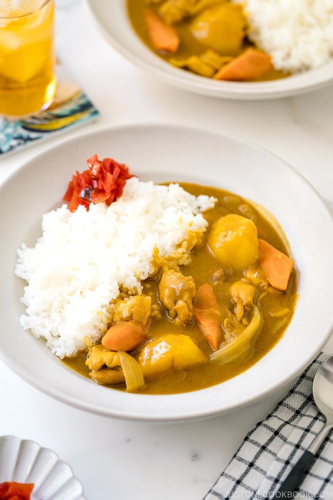

Japanese Curry Rice

Description
The perfect meal for cold days, the Japanese variation on curry is slightly sweet and fragrant compared to the spicier South asian variation
Ingredients
- boneless chicken thighs
- kosher sea salt
- black pepper
- onions
- carrots
- yukon gold potatoes
- ginger
- garlic
- apple
- neutral flavored oil
- chicken broth
- honey
- soy sauce
- ketchup
- japanese curry roux
- short grain rice
Steps
- Gather all the ingredients, prepare onions into wedges
- Peel the carrots and cut into rolling wedges (rangiri in Japanese).
- Peel the potatoes into quarters and soak in water for 15 minutes to remove the excess starch
- Grate the ginger, you will need atleast 1tsp of grated ginger
- Peel and cut the apple into quarters and grate the apple into a pulp
- Cut off any fat from the chicken and then cut into bite-sized pieces. Recommended to cut diagonally to create more surfaces and flatten each piece to cook faster (called sogigiri in Japanese). Season with salt and pepepr
- Heat oil in a lare pot and add onion.
- Saute the onion stirring until translucent and tender
- Add the minced garlic and grated ginger, mix well
- Add the chicken and cook stirring frequently until the chicken is no longer pink on the outside. Reduce the heat to medium low if the onion is getting too brown
- Add the chicken stock. You can also use water only or half stock + half water.
- Add the grated apple, honey, soy sauce and ketchup (or any other condiment you choose to add)
- Add the carrot and potatoes
- Simmer covered on medium-low heat for 15 minutes stirring occasionally (Simmer uncovered if the ingredients are completely submerged in the broth).
- Once boiling skim the scum and foam from the surface
- Continue covered until a wooden skewer goes through the dense vegetables
- Turn off the heat and add 1-2 cubes of roux with a ladle and dissolve in a spoon with chopsticks.
- Simmer uncovered on medium-low heat stirring frequently until the curry is thick for about 5-10 minutes. Make sure no roux or food is stuck to the bottom of the pot
- Taste and add salt to personal taste
- Serve with steamed rice and garnish with fukujinzuke (pickled ginger)